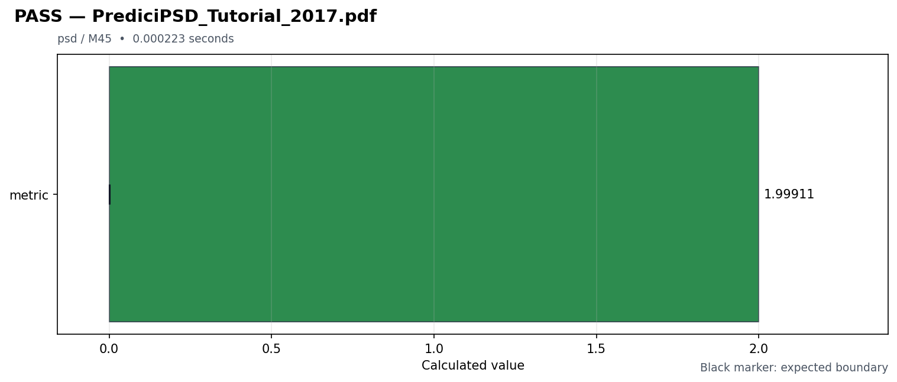

Manual reproduction report
Generated (UTC): 2026-07-16T00:52:13.244245+00:00
Command: python main_program28.py
Python 3.13.14 / Windows-11-10.0.26200-SP0
PASS1
FAIL0
SKIP0
PDF coverage1 / 392.56%
Duration0.0002s

By feature
| Name | Examples | PDFs | PASS | FAIL | SKIP |
|---|
| psd | 1 | 1 | 1 | 0 | 0 |
By milestone
| Name | Examples | PDFs | PASS | FAIL | SKIP |
|---|
| M45 | 1 | 1 | 1 | 0 | 0 |
Results by PDF
PrediciPSD_Tutorial_2017.pdf
| Example | predicipsd_tutorial_2017 - PrediciPSD_Tutorial_2017 |
|---|
| Classification | psd / M45 |
|---|
| Status | PASS |
|---|
| Duration | 0.000223 seconds |
|---|
| Metrics | metric=1.99910862682 |
|---|
| Expected | metric: [0, +inf] |
|---|
| Reason | - |
|---|